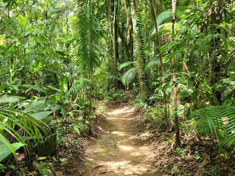
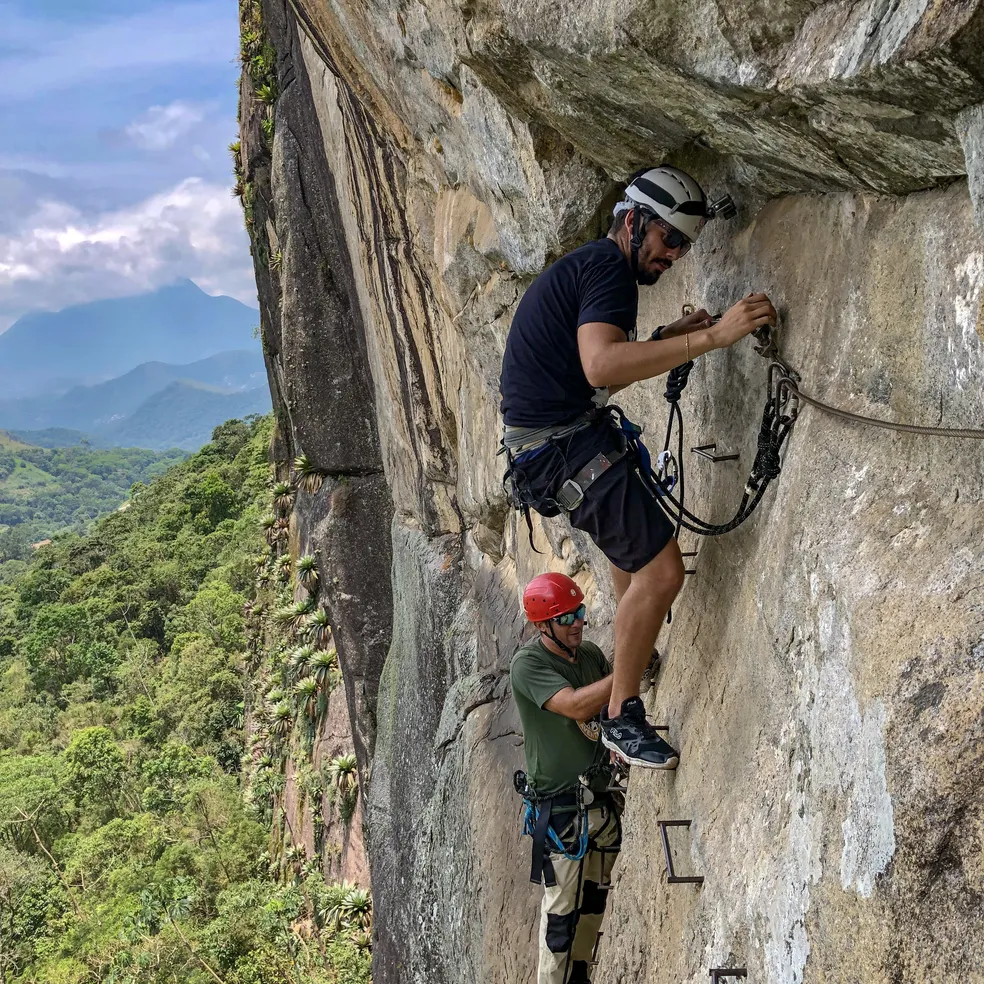
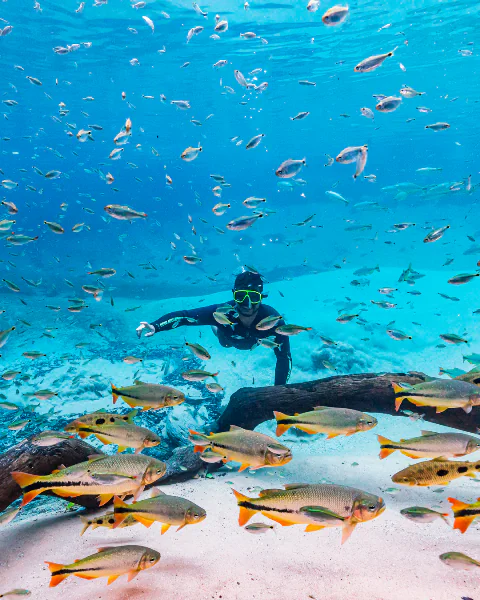
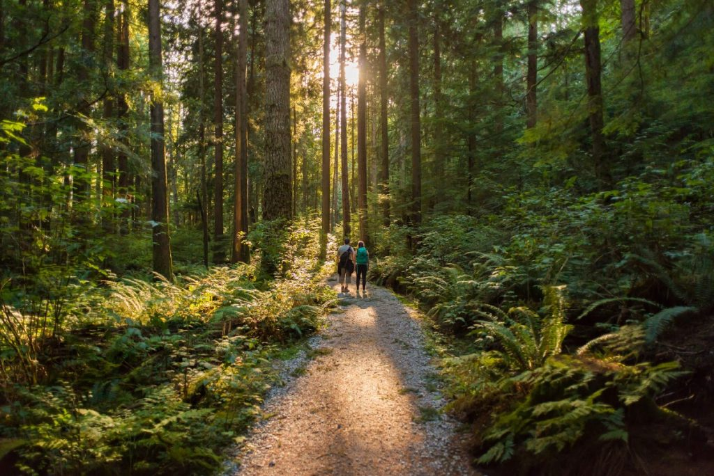

Mergulho
Conheça as belezas marinhas

Escalada
Descubra o mundo do alto.

Trilha
Explore a natureza terrestre.
Conheça as belezas marinhas
Descubra o mundo do alto.

Explore a natureza terrestre.
Encontre lugares incríveis para sua próxima viagem.

É um esporte e uma atividade física que consiste em subir paredes de rocha, montanhas ou estruturas artificiais utilizando o próprio corpo.

É uma atividade incrível que pode ser feita em rios de águas cristalinas e piscinas naturais repletas de vida marinha

Trilha é um caminho sem pavimentação localizado em áreas naturais ou rurais, usado para caminhadas, contato com a natureza e ecoturismo
Pedra Bela é uma charmosa estância turística e a cidade mais rural do estado de São Paulo, localizada na Serra da Mantiqueira a cerca de 117 km da capital.
Escolha sua proxima parada.